Step 2: Modeling Standards
Contents
Introduction
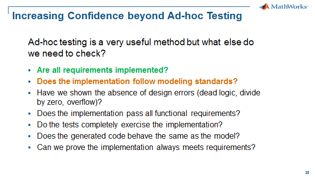
Model Advisor finds unwanted model properties, such as incorrect or deprecated blocks and block parameters, non-robust model constructs and other practices that do not facilitate consistentcy, readability and sharing. Model Advisor is a part of the Simulink basic functionality, but Simulink Verification and Validation extends the Model Advisor capability by providing the user with pre-defined "checks" based on the following industry standards:
- DO-178C and DO-331 Checks
- IEC 61508 Checks
- ISO 26262 Checks
- EN 50128 Checks
- MathWorks Automotive Advisory Board Checks (MAAB Style Guidelines)
A "check" in Model Advisor means a rule that the tool will use to examine your model and flag any settings that don't agree with the pre-defined criteria. The default set of checks (without Simulink Verification and Validation) can be seen under the By Product/Simulink Verification and Validation folder. In addition to the modeling standard checks listed above, Simulink Verification and Validation provides the following functionality:
- Application program interface (API) for building custom checks.
- Requirements Consistency Checks
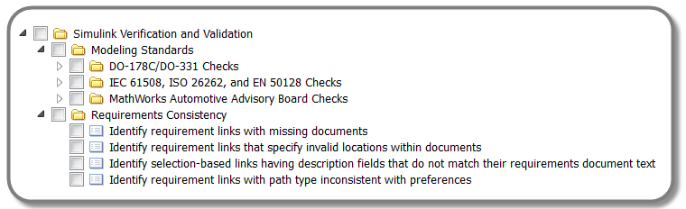
Verification and Validation Tools Used
- Simulink Verification and Validation
Running Model Advisor
The default Model Advisor set of checks falls into two different categories:
- By Product
- By Task
For this workshop, we will run our model through the MAAB style guide checks first in order to get a good understanding of what this feature would do for you, and then we will explore more advanced maneuvers such as how custom checks are created.
Do the following:
- Open the CruiseControl_MdlAdv_ReqLink.slx – click here
- Go to Analysis, Model Advisor and select Model Advisor
You should then see a window pop up:
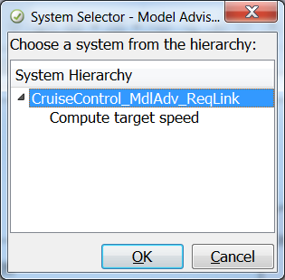
At this point, you can select only the subsystem you want to run Model Advisor on. In general, you would want to run Model Advisor on the whole model and we will run the checks on the entire model.
3. Select OK.
You should now see the Model Advisor menu below open up. You can expand the folders or groups as you would with Windows Explorer. For this exercise, we are going to look at various MAAB style guide checks.
4. Expand the folder (as shown in the picture below) so you can see the different MAAB style guide categories.
5. Check the checkbox of Modeling Standards for MAAB. This should check all subcategories.
6. Hit the Run Selected Checks button.
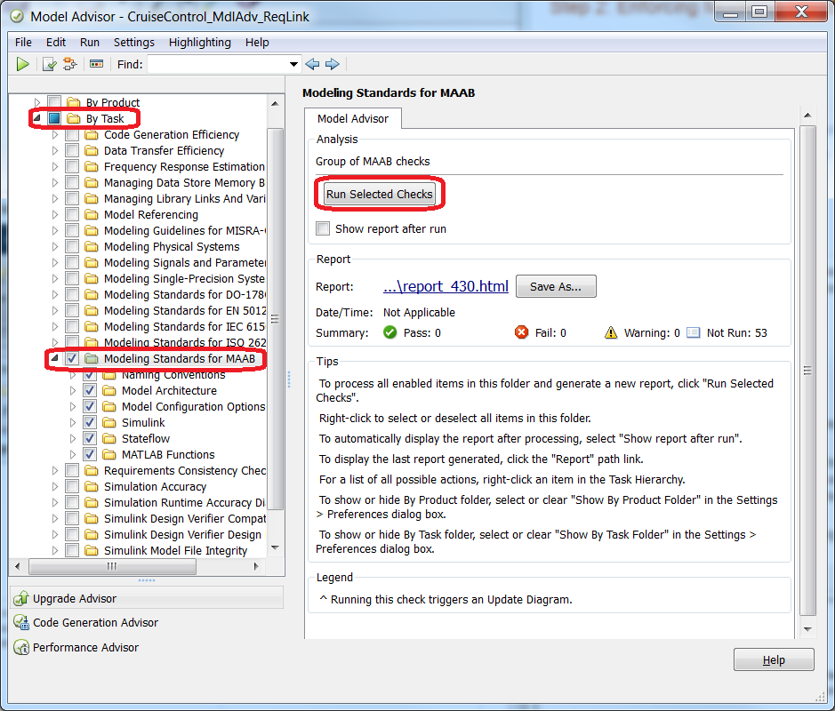
Note: Your list of checks might be slightly different than the screen shot. The list of checks is a function of installed products.
After the analysis is done, the summary is listed in the right pane for the MAAB checks.
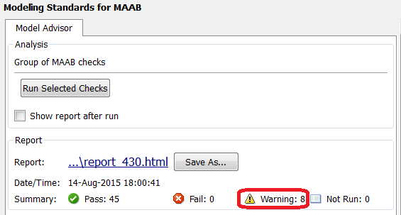
Note that there are 8 warnings. Let's take a look at what is causing these warning messages:
- Check subsystem names-- name contains spaces; C code issue, readability
- Check model diagnostic parameters-- (2) diagnostics need to be set to none; workflow, code generation
- Check for diagram using nonstandard display attributes-- several issues; consistency
- Check font formatting-- usage of two font sizes in model; consistency
- Check for propagated signal labels-- outport signals need to be set for label propagation; readability, code generation, verification & validation
- Check entry formatting in State blocks in Stateflow charts-- entry label not a line by itself, readability
- Check default transition placement in Stateflow charts-- default state not the top-most state; readability
- Check for comparison operations in Stateflow charts-- value is not cast to the same type as the signal: code generation, verification & validation
Creating a Restore Point
Before we investigate and fix these issues we need to create a restore point so if we decide a different strategy on how to handle these issues then we can easily go back to our last "good" model.
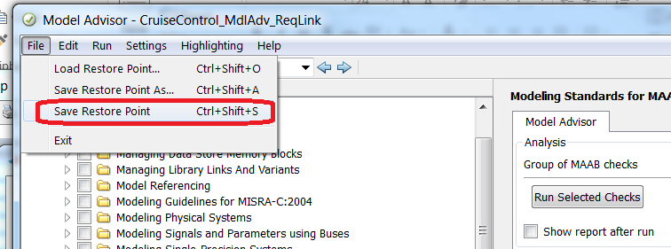
Fixing the Non-Passing Model Advisor Checks
First let's go through an example to show the workflow for fixing issues found in Model Advisor. We will fix the issue associated with Check subsystem names. To navigate to this issue in the Model Advisor, do the following:
1. Go to the Simulink folder under Modeling Standards for MAAB. There are 8 warnings in this category.
2. Select the Check subsystem names warning. The right pane should now have a detailed reason of why the check failed (see picture below).
According to the rule description we need to modify name so that it is a correct name for C code. For more information, you can click on the See Also hyperlink or the Help button. You can also download the MAAB style guide from the web for more detailed information.
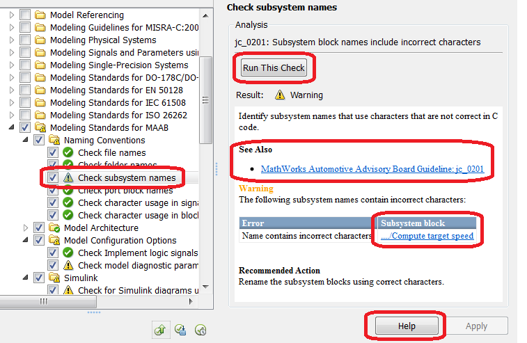
Let's try to fix this warning:
3. Click on the .../Compute target speed link. That should bring you to the correpsponding block that violated this rule/check.
4. Eliminate spaces in the name, change the name to "ComputeTargetSpeed"
5. Rerun Check subsystem names check and it should pass (see picture below).
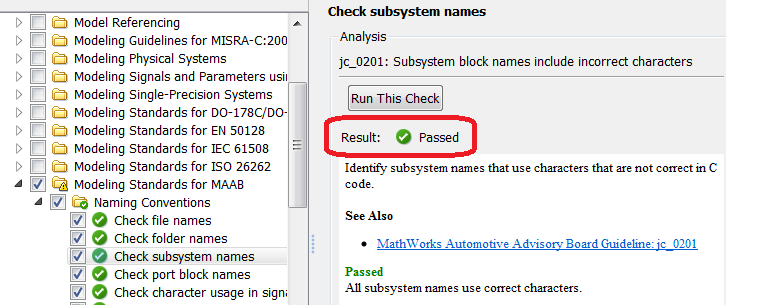
Repeat this procedure to fix the remaining issues. To help you work through this task efficiently, here are some helpful hints:
- Check model diagnostic parameters-- set both to warning
- Check for diagram using nonstandard display attributes-- use the Modify button to fix
- Check font formatting-- use the Modify All Fonts to fix
- Check for propagated signal labels-- set both output signal properties to "Show propagated signals"
- Check entry formatting in State blocks in Stateflow charts-- modify so en: is on a separate line
- Check default transition placement in Stateflow charts-- SKIP until next section Excluding Blocks from Model Advisor Analysis
- Check for comparison operations in Stateflow charts-- change to tspeed!=uint8(0)
Excluding Blocks from Model Advisor Analysis
If you want to exclude a check, you simply uncheck it and it will be exluded from the analysis. You can also put together a custom list of checks to only run those that you think make sense for you. This is covered in the last section of this step.
However, sometimes you want to run a check on a model, but exclude only specific blocks or specific bloc types from all checks or individual checks. The Check default transition placement in Stateflow charts is a good candidate for exclusion since this may require a major rework of the the Stateflow chart. We will now show how to exclude this block to enable us to pass all the MAAB checks. We would likely still have to justify this during the model review but as we will see the use of exclusion is documented in the final report.
1. Open Model Advisor window, and expand the Model Architecture folder (under Modeling Standards for MAAB)
2. Select the warning for Check default transition placement in Stateflow charts
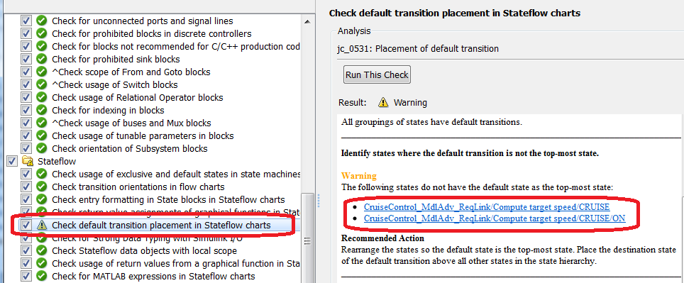
The Recommended Action is to rearrange the states so the default state is the top-most state. Place the destination state of the default transition above all other states in the state hierarchy. However, let's say that we approve this deviation from the MAAB standard for our model. To do this, follow the steps below:
3. Click on the hyperlink to the first default state
4. Navigate up one level and select the state chart
5. Right-click the state chart block and select Model Advisor, Exclude block only
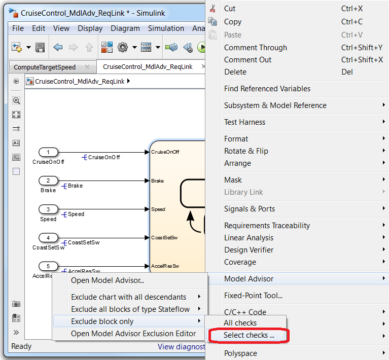
6. Find Check default transition placement in Stateflow charts in the list box. Look at the relative position in the list box to help find the check (see picture below):
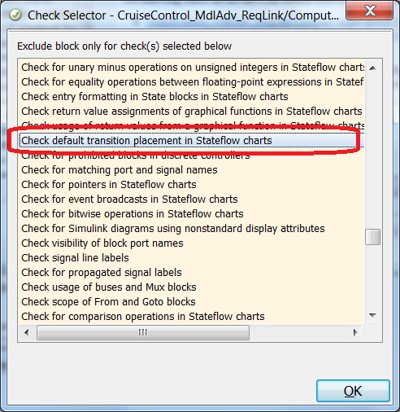
7. This opens the Model Advisor Exclusion Editor (see picture below)
8. Click the Change button to name the exclusion file
9. Click Save as in the dialog that appears, name the file CruiseControl_exclusions.xml
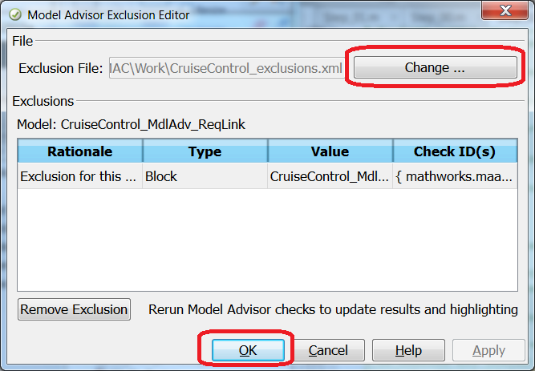
10. Rerun the check Check default transition placement in Stateflow charts under % Model Architecture to confirm that this check now passes.
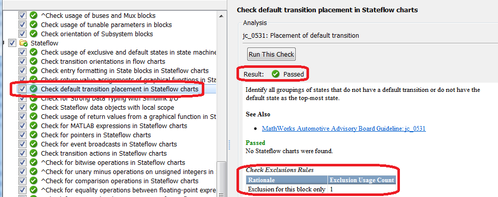
11. Rerun the entire Modeling Standards for MAAB The Model Advisor Exclusion Editor to confirm all checks now pass.
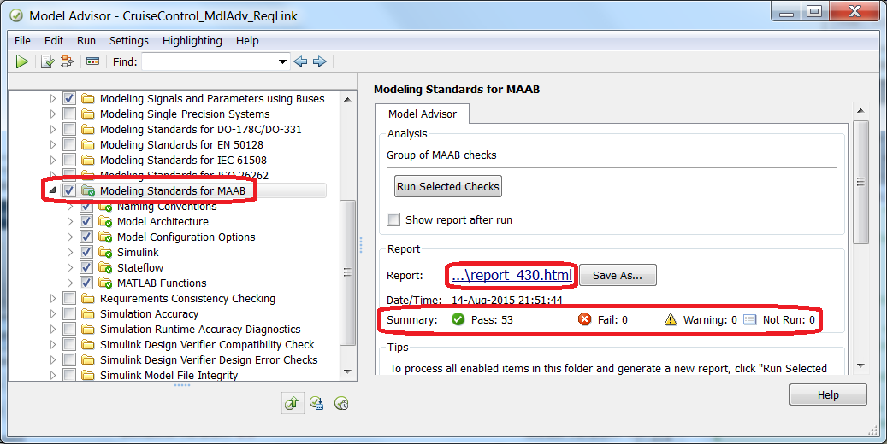
12. Select report hyperlink to view report ..\report_NNN.html
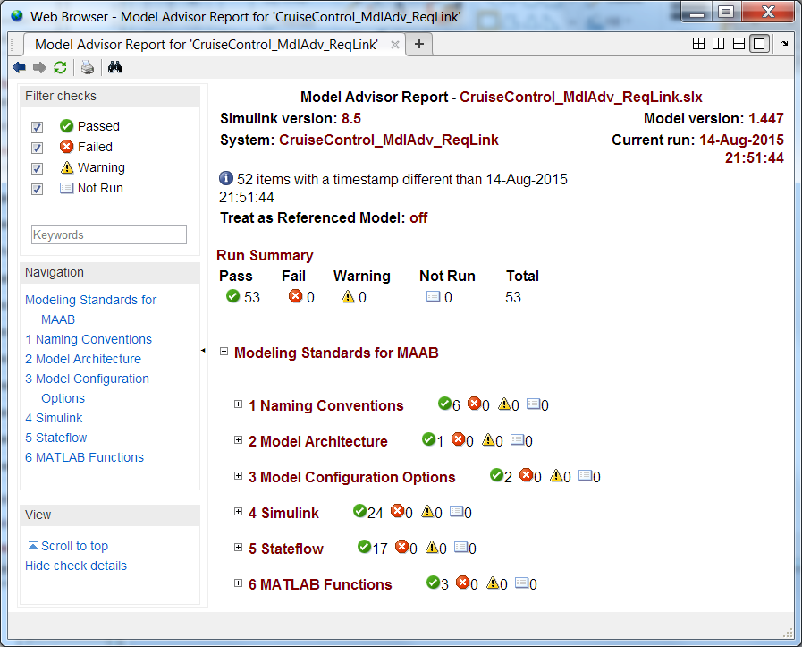
Adding Customized Checks to Model Advisor
As mentioned at the beginning of this section, Simulink Verification and Validation allows users to add customized checks to Model Advisor. This is done through the Model Advisor API and the sl_customization.m file. For this workshop, three new custom checks will be added based on the MATLAB code in sl_customization.m file.
Do the following:
- Close all model files and the Model Advisor window – click here
- Setup the sl_customization.m file – click here (this copies sl_customization.m into the working dir)
- To view sl_customization.m - click here
- At the MATLAB command prompt, enter the following command: >> sl_refresh_customizations or click here
- Open the CruiseControl_MdlAdv_ReqLink.slx – click here
- Re-open Model Advisor.
You should see the following window appear. If you do, click Remove existing report and continue. This just means that there is an old result in the system from your previous run that needs to be removed before continuing.
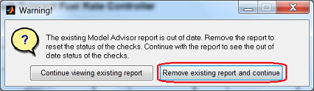
This time, a new folder has appeared under By Product named Custom Workshop Checks (see picture below).
The folder contains the following 3 customized checks:
- Check Simulink block font
- Check Simulink window screen color
- Check model optimization settings
These checks were scripted in MATLAB using the Simulink API and added to the Model Advisor UI using the sl_customization.m file. When sl_customization.m changes, the UI must be refreshed with the sl_refresh_customizations command. You can take a look at the content of the file by clicking here.
Let's run through all three of these custome checks:
- Select and check Custom Workshop Checks.
- Click on the Run Selected Checks button (see picture below).
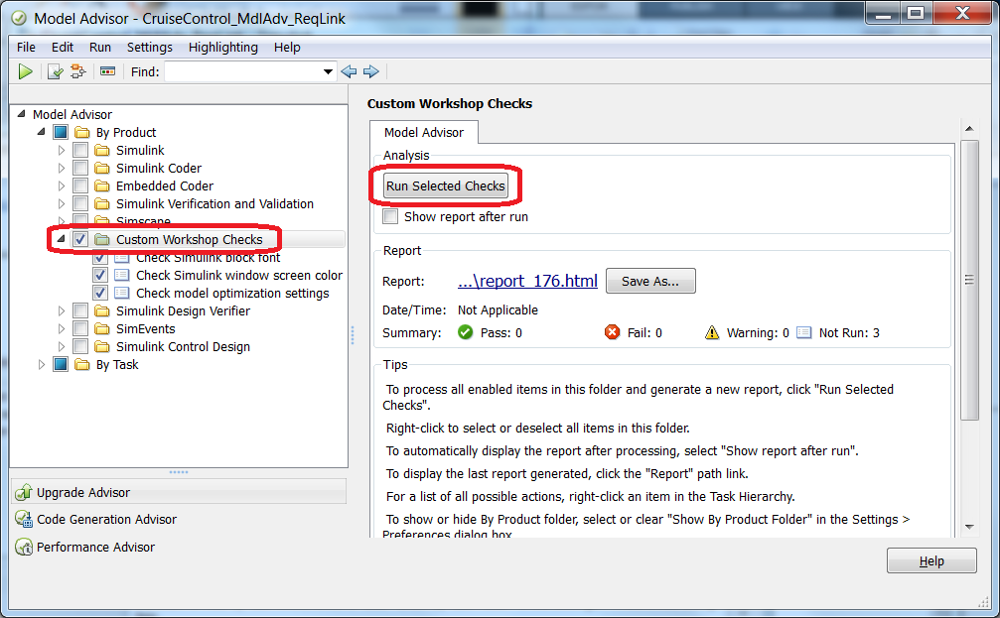
3. After you have run the checks, select the first one - Check Simulink block font - which has failed.
4. Click on the Fix block fonts button (see picture below).
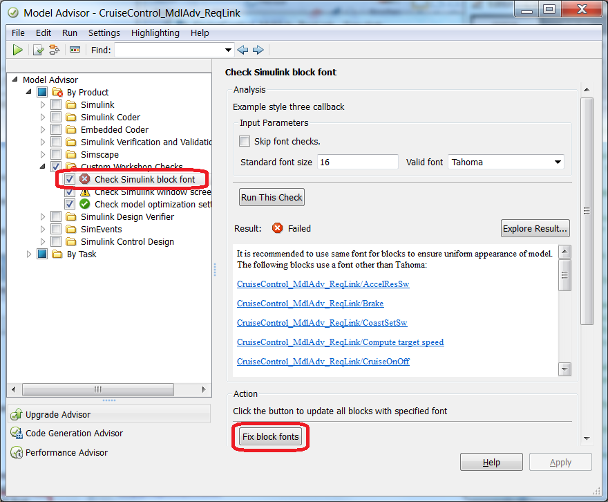
In some cases, it is possible have a "*Fix ...*" action, in which Model Advisor would follow a pre-defined or programmed fix action to correct the model for you. Since font type and size have a very "objective" procedure to fix the model, we can implement a "*Fix ...*" action.
5. The Check Simulink window screen color also does not pass. Following the same procedure, use the Fix window screen color button to correct the window screen color.
The model should now look like below. The fonts have been updated to Tahoma, size 16 and the window screen color is white.
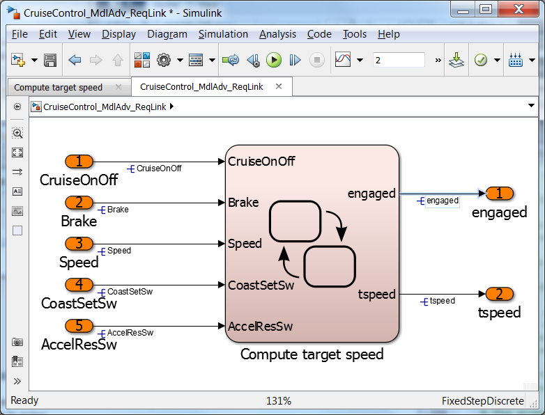
6. Re-run the Custom Workshop Checks - they should now all pass.
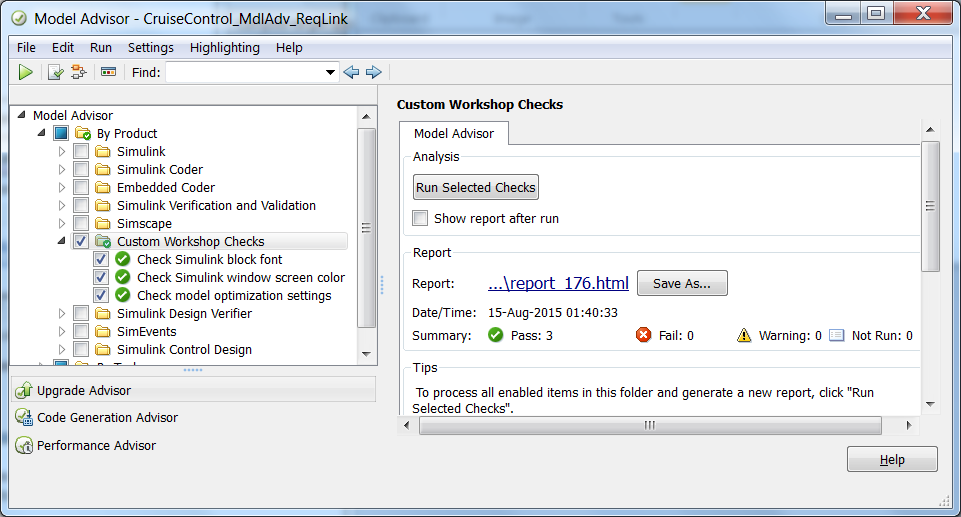
Customizing Model Advisor Menu
In addition to being able to add your own checks, you can also configure the Model Advisor menu with different folders, or different initial check configurations (enable/disable/hidden).
Do the following:
1. In Model Advisor window, under Settings, select Open Configuration Editor.
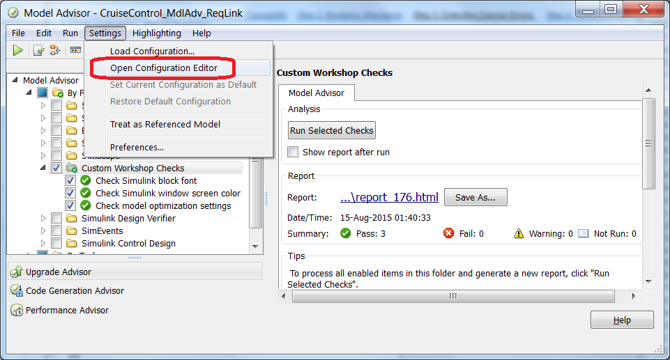
You should see the following windows open up:
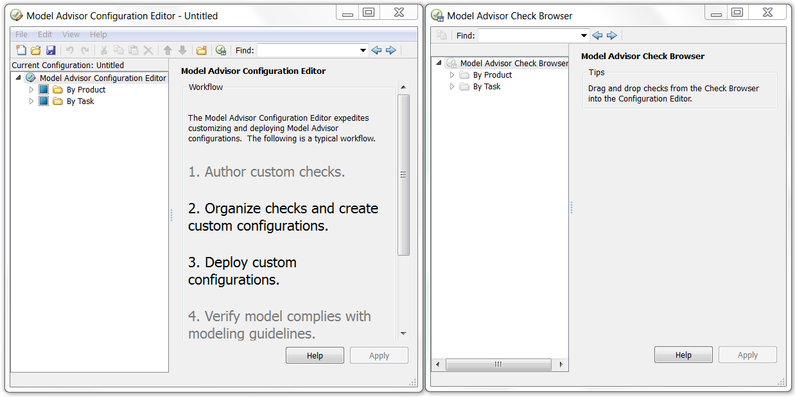
You can now modify (drag and drop) the check tree structure in the left-hand window using the checks available in the right-hand window.
2. Drag and drop check from Right (Source) window to the Left (Destination) window.
3. Create and delete folders in the left window.
4. Enable or disable specific checks in the left window.
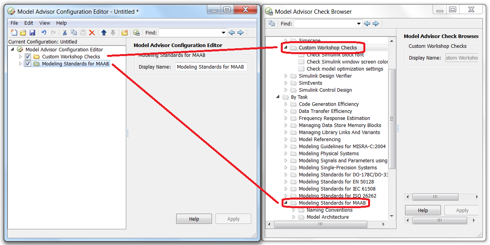
Once you are done, you can save the configuration as a .mat file, and share the configuration setting with others.
5. Select File and Save As.
6. Save the configuration as CruiseControl_MA_Config.mat.
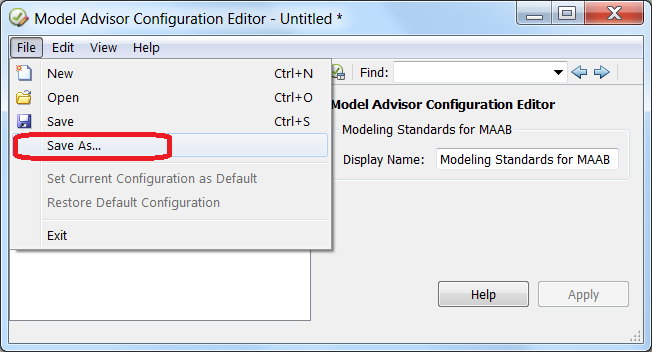
Now that you have a custom Model Advisor configuration, let's use it.
7. Select File and Set Current Configuration as Default, also press OK to warning popup
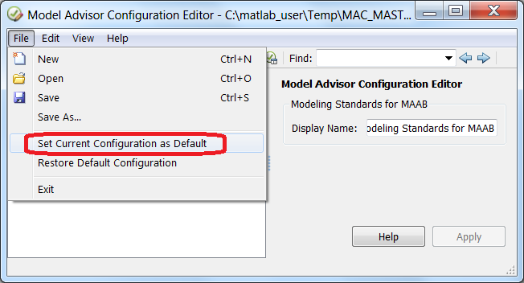
8. Exit the Model Advisor Configuration Editor and reopen Model Advisor
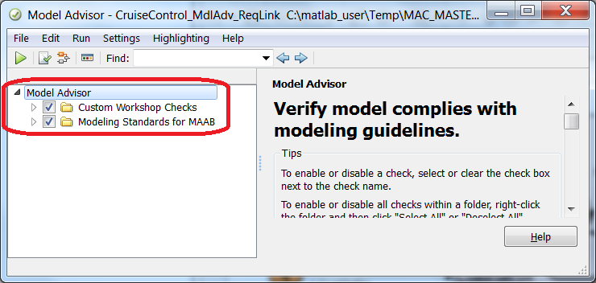
9. Another way to load your custom Model Advisor configuration -- In the Model Advisor window, under Settings, select Load Configuration...
10. To restore default settings -- In Model Advisor window, under Settings, select Restore Default Configuration.
Summary
With the functions above, we were able check our Cruise Control model for compliance to industry, international and company standards and best practices. We were able to carry out this task using the base Simulink, Model Advisor tool along with the modeling standards checks provided by Simulink Verification and Validation.
In the exercises we demonstrated compliance to the MAAB modeling standard. The benefits of complying to the MAAB modeling standard include readability, making the model production code ready, facilitating a standard V&V workflow and enabling re-use. Additional checks for complying to a safety standard like ISO 26262 are also available to be used as part of an overall process to demonstrate ISO 26262 compliance. The safety standards were not part of the exercises but the same procedure used in the MAAB exercises would apply to demonstrating compliance to the safety standard.
The standards checking can be customized to fit your model-based design process. Methods used to provide this customization to your process were also demonstrated:
- Custom checks can be created to check models for internal modeling standards
- Custom model checking configurations can include only the checks that apply or provide benefit to your workflow
Going forward we have increased confidence in our design knowing that are model follows a modeling standard. We have now answered all the questions as we have now demonstrated a structured and formal testing framework for securing the quality, robustness and safety of our cruise controller.
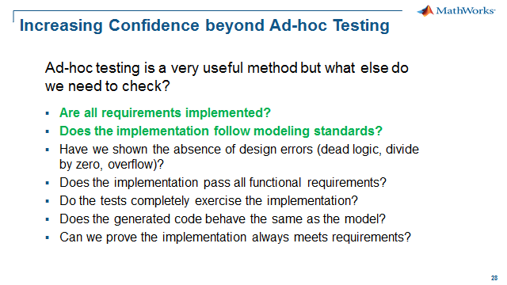
- Close all models - click here.
- Go to Step 3: Detecting Design Errors - click here.